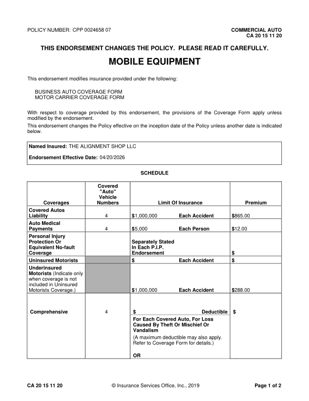
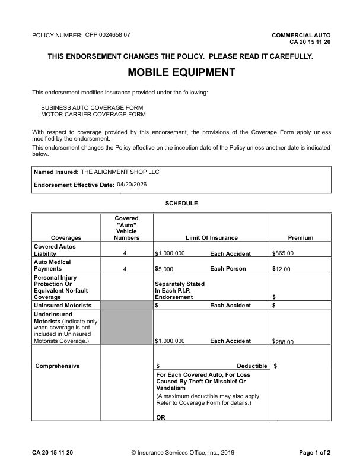
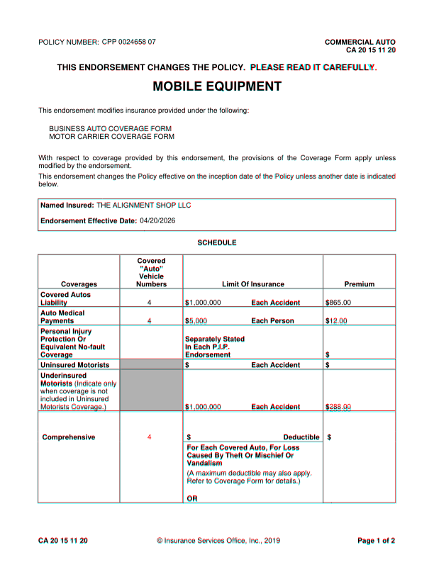
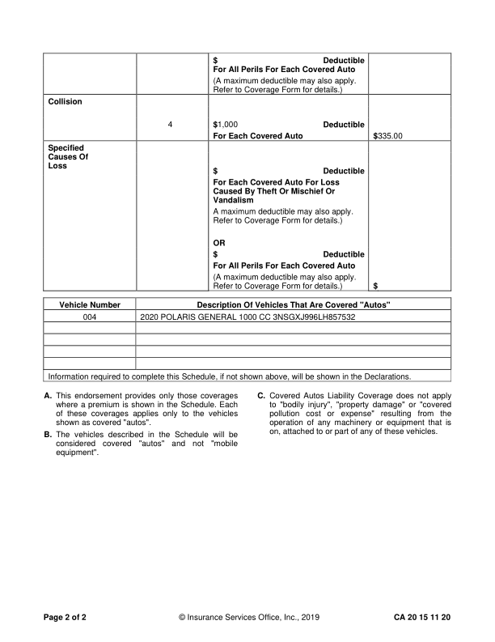
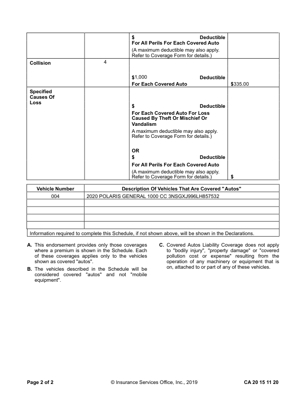
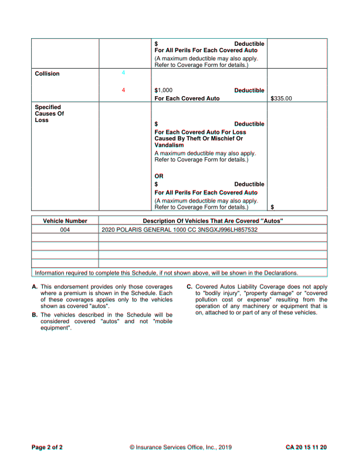

CA2015_1120: DIFFERENT score 99.9% pages golden 2 html 2 (pages with text) words golden 418 html 417 missing 1 extra 0 MISSING (in the GhostDraft golden, not in the HTML render) [4] <= 4 $ 1,000 Deductible golden C:\src\fact-docgen\src\Moe.Commercial.Documents.Generation.Integration.Tests\TestData\Snapshots\CA2015_1120\GoldenSnapshot.txt template C:\src\fact-poc\output\ghostdraft\batch\CA-20-15-11-20-Mobile-Equipment.json serverxml C:\src\fact-poc\output\ghostdraft\serverxml\CA2015_1120\ServerXml.xml



moved 288.00 (+0.0, +2.6)pt missing v rule at 172.0 (506.5-520.6) missing v rule at 254.9 (506.5-520.6) extra h rule at 280.9 (53.2-558.0) extra h rule at 520.9 (54.0-558.0) extra h rule at 580.1 (54.0-557.2) extra h rule at 709.1 (53.2-557.2) extra v rule at 53.6 (281.2-325.5) extra v rule at 258.4 (360.0-709.5)



missing v rule at 53.9 (368.4-471.3) extra h rule at 65.6 (53.2-557.2) extra h rule at 116.6 (54.0-558.0) extra h rule at 173.6 (54.0-558.0) extra h rule at 358.9 (53.2-557.2)